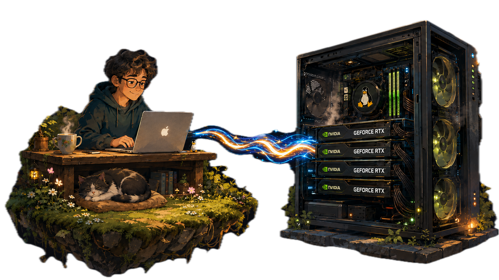

Ridiculously fast bidirectional code sync
Save a file on your laptop and KAPOW! it instantly syncs to your Linux box.
Your Linux box generates a new asset and SWOOSH! it syncs back to your laptop.
Every save is kept. Roll back to any version at any time.
Zero server-side setup
curl -fsSL https://tomo-sync.dev/install.sh | sh

Tomo was born out of the GPU workflow.
Edit files on your mac and sync them to your GPU workstation.
Non-GPU workflows are also welcome!
Six things it gets right.
Save a file and it's on the box in a few milliseconds. It stays that fast whether the tree has ten files or ten thousand, because Tomo watches for changes instead of scanning. The build's output comes back just as quick.
Every save is versioned on disk. tomo log shows the versions, tomo diff compares two of them, tomo restore brings one back. It's undo that survives closing your editor.
Edit the same file on both machines at once and neither side blocks. They independently land on the same winner, and the version that lost gets saved to history where you can pull it back. No merge prompts, no lost edits.
Tomo copies itself to the server over the SSH connection you already use and runs from there. You don't need root, a package manager, a daemon, or an open port.
kill -9 it mid-write and nothing's half-written. Fill the disk and it stalls loudly instead of dying. Drop the network and it reconnects and catches up. A server clock years out of sync doesn't matter, because ordering uses vector clocks, not wall time.
One file, no dependencies, Linux and macOS. Drop it on your PATH and run it. That same binary is what gets pushed to the server, so both ends always match.
tomo is event-driven, so save-to-arrival is ~6 ms whether the tree has 10 files or 20,000. rsync rescans the whole tree every run (~370 ms here), and that cost grows with the tree, cold caches, and network hops. Bulk seeding is still rsync's job today — seed the box however you like, tomo reconciles whatever's already there. Full methodology and raw numbers →
Three commands. That's the whole loop.
Make the current folder a Tomo project. Everything Tomo needs goes in .tomo/.
$ tomo init
Point it at the box once. It installs itself there and starts syncing in both directions.
$ tomo sync you@gpu-box:~/proj
Roll a file back to an earlier save. If a session's running, the restored version syncs over too.
$ tomo restore src/main.rs